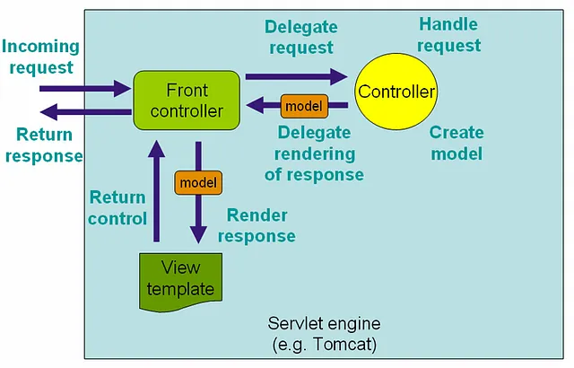
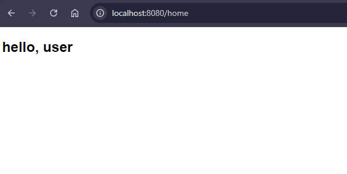
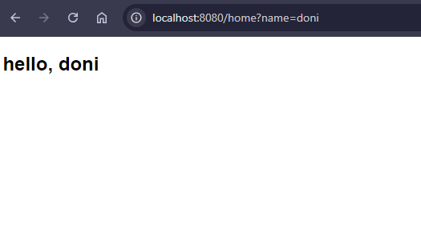

Pendahuluan Spring Web MVC (Model-View-Controller)
Spring Web MVC adalah kerangkar kerja dari Spring Framework dengan pattern MVC (Model-View-Controller). Spring MVC ini berfungsi untuk menghandle permintaan dari pengguna melalui UI/Front End, ketika pengguna mengakses website maka akan mengakses halaman html, disitulah yang akan di handle oleh MVC, pola MVC ini sangat umum sekali pada website saat ini. Untuk cara kerja dari Spring MVC bisa dilihat dalam gambar dibawah.
Pada gambar terdapat objek Controller, disitulah kelas yang berisi hal-hal untuk menangani permintaan dari pengguna. Langsung saja ke contoh.
Contoh Spring Web MVC
Untuk contoh ini sangat sederhana, hanya akan membuat 1 request yaitu GET, mengakses file html kemudian dengan parameter untuk memberikan data ke Controller, lalu data akan ditampilkan ke halaman web. Pertama buat projek Spring Boot, kemudian untuk dependency yang dibutuhkan:
- Spring Web
- Spring Thymleaf
Lalu kita buat kelas Controller, nama bebas. Untuk contoh ini saya namai WebController.java
package ifandika.springmvc.main.controller;
import org.springframework.stereotype.Controller;
import org.springframework.ui.Model;
import org.springframework.web.bind.annotation.GetMapping;
import org.springframework.web.bind.annotation.RequestParam;
@Controller
public class WebController {
@GetMapping(path = "/home")
public String home(@RequestParam(name = "name", required = false, defaultValue = "user") String name, Model model) {
model.addAttribute("name", name);
return "home";
}
}
Pertama kelas kita beri anotasi @Controller, dimana ini menandakan kelas ini sebagai kelas Controller. Kemudian kita buat fungsi home() dengan anotasi @GetMapping, fungsi ini untuk method GET dengan path/url "/home" (localhost:8080/home). Lalu untuk parameter fungsi ini ada String name ditandai anotasi @RequestParam, berarti ini untuk parameter pada url/path, dimana nama dari atribut param ini "name", required kita set ke false agar tidak wajib diberikan, dan defaultValue kita beri "user". Lalu ada Model, model ini digunakan untuk menyimpan data yang nantinya bisa kita ambil untuk ditampilkan ke halaman web. Setelah itu kita buat file HTML pada direktori "resources/templates" dengan nama home.html
<!DOCTYPE html>
<html lang="en" xmlns:th="http://www.thymeleaf.org">
<head>
<meta charset="UTF-8">
<title>Home Spring MVC</title>
</head>
<body>
<h2 th:text="|hello, ${name}|"/>
</body>
</html>
Lalu kita jalankan projek spring mvc-nya, kemudian kita akses dengan url "localhost:8080/home", maka hasilnya.
Kemudian jika kita jalankan projek spring mvc-nya, kemudian kita akses dengan url "localhost:8080/home?name=doni", maka hasilnya.
